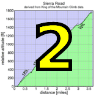

|  |  |
 |

|
| Adela Skidmore pushes her father Ammon up Page Mill Road (Kieran Sherlock) |
For week 3, Low-Key returned to Page Mill Road in Palo Alto for the first time in 5 years. And for the first time ever, we rode it not as an individual time trial but as a small-group start. This worked nicely as Low-Keyers rode the bottom, relatively flat portion safely, then the steeper slopes following Story Hill broke up the groups.
From the "fast" group, hybrid-electric Bill Bushnell set a steady 20 mph tempo from the beginning. Others in the group could follow this without difficulty until following Story Hill the road pitched upwards and the real sorting began. The one who clung the closest to Bill's relentless pace was week 1's men's winner Tracy Colwell. Although a few of the riders were later able to close the gap to Tracy, in the end Tracy was able to drop everyone, winning by a clear 19 seconds ahead of Carl Nielson, with Murray Swanson a close third.
In the women's grouping, Metrimint's Kelly Crowley took the top spot followed byLisa Penzel and Helen Casabona, a repeat of last week's "podium" with a different order this time. There was a great turn-out this week among the women with 21 total. Hopefully this momentum continues!
And it was another very strong week among the juniors. Riley Auten, Justin Leung, Adela Skidmore, and Skyler Colwell all produced excellent results. Liam Colwell, on a pace to PR the course, was distracted by llamas along the way, but I'm sure he'll be back...
In the weekly team standings, it was Pen Velo flexing serious muscle to score an outstanding 372 points. Sisters and Misters (even without team star Janet Martinez) and Bike Trip were a close second and third. Western Wheelers was reduced to fourth on the day after some questionable predatory recruiting by an unnamed team, but we move onward...
Thanks to everyone who came out and especially to coordinator Janet Lafleur and her spectacular team of volunteers!
Strava T-shirt qualifiers indicated with orange background.
| pl | # | name | team | cat | time | mph | fph | score |
|---|---|---|---|---|---|---|---|---|
| 1 | 6 | Bill Bushnell | Low-Key | Its All About The Bike | 25:31 | 20.27 | 5222 | 105.60 |
| pl | # | name | team | cat | time | mph | fph | score |
|---|---|---|---|---|---|---|---|---|
| 1 | 48 | Tracy Colwell | Team Colwell | 40+ | 34:01 | 15.20 | 3917 | 128.07 |
| 2 | 248 | Carl Nielson | Sr's & Mr's of No Mercy | M50+ | 34:27 | 15.01 | 3868 | 126.46 |
| 3 | 140 | Murray Swanson | Pen Velo/Pomodoro | 40+ | 34:29 | 15.00 | 3864 | 126.34 |
| 4 | 1 | Daniel Connelly | Low-Key | 3 | 35:30 | 14.57 | 3754 | 122.72 |
| 5 | 106 | McLovin | The Brown Zone | 1 | 36:15 | 14.27 | 3676 | 120.18 |
| 6 | 114 | Steve Peck | Silicon Valley Triathlon | 45+ | 36:21 | 14.23 | 3666 | 119.85 |
| 7 | 246 | Clark M. Natwick | Pen Velo/Pomodoro | 50+ | 36:22 | 14.22 | 3664 | 119.80 |
| 7 | 59 | Mark Edwards | Bike Trip/Symantec | 50+ | 36:22 | 14.22 | 3664 | 119.80 |
| 9 | 33 | Bill Brier | Team Fremont FFBC p/b Chipotle | 45+ | 36:23 | 14.22 | 3663 | 119.74 |
| 10 | 329 | Dave Blizard | Pen Velo/Pomodoro | 40+ | 36:30 | 14.17 | 3651 | 119.36 |
| 11 | 144 | Nils Tikkanen | Bike Trip/Symantec | Honey Badger | 36:31 | 14.16 | 3649 | 119.31 |
| 12 | 342 | Kevin Susco | Webcor/Alto Velo | 50+ | 36:49 | 14.05 | 3620 | 118.33 |
| 13 | 7 | James Porter | Western Wheelers | 3 | 37:17 | 13.87 | 3574 | 116.85 |
| 13 | 308 | Rune Dahl | Western Wheelers | 45+ | 37:17 | 13.87 | 3574 | 116.85 |
| 15 | 225 | Chris Furgiuele | Dolce Vita Cycling | 35+ | 37:37 | 13.75 | 3543 | 115.82 |
| 16 | 63 | Joe Fant | San Jose Bike Club | 50+ | 37:38 | 13.74 | 3541 | 115.77 |
| 17 | 325 | Kevin Keenan | Sr's & Mr's of No Mercy | 55+ | 37:40 | 13.73 | 3538 | 115.66 |
| 18 | 133 | Dai Sieh | The Brown Zone | Robusto | 37:41 | 13.72 | 3536 | 115.61 |
| 19 | 44 | Tim Clark | Low-Key | 40+ | 37:45 | 13.70 | 3530 | 115.41 |
| 20 | 96 | Bennett Chi Lee | Speedy Bees | 45+/Ponytail | 37:51 | 13.66 | 3521 | 115.10 |
| 21 | 316 | Cesar Guillen | 37:55 | 13.64 | 3515 | 114.90 | ||
| 22 | 344 | Jamie Willin | Olympic Club | 55+ | 37:57 | 13.63 | 3511 | 114.80 |
| 23 | 53 | J.D. Daniels | Eden Bikes | 35+ | 38:48 | 13.33 | 3435 | 112.29 |
| 24 | 273 | David Nader | Pen Velo/Pomodoro | 40+ | 38:50 | 13.32 | 3432 | 112.19 |
| 25 | 251 | Dan Perry | Bike Trip/Symantec | 40+ | 38:58 | 13.27 | 3420 | 111.80 |
| 26 | 311 | Brian Edwards | Dirkless | 39:05 | 13.23 | 3410 | 111.47 | |
| 27 | 61 | Steven Enns | 39:17 | 13.17 | 3392 | 110.90 | ||
| 28 | 900 | Mike Robles | Sr's & Mr's of No Mercy | 45+ | 39:20 | 13.15 | 3388 | 110.76 |
| 29 | 226 | Tom Gardin | 45+ | 39:23 | 13.13 | 3384 | 110.62 | |
| 30 | 129 | Tim Sawyer | Bike Trip/Symantec | 50+ | 39:34 | 13.07 | 3368 | 110.11 |
| 31 | 94 | Jim Langley | Bike Trip/Symantec | 55+ | 39:47 | 13.00 | 3350 | 109.51 |
| 32 | 237 | Justin Lucke | LGBRC | Plant Based | 40:00 | 12.93 | 3332 | 108.92 |
| 33 | 52 | Rob Cosaro | Doogie | 50+ | 40:03 | 12.91 | 3327 | 108.78 |
| 34 | 112 | Shance Ordell | Western Wheelers | 35+ 123 | 40:12 | 12.87 | 3315 | 108.37 |
| 35 | 242 | Peter Mehlitz | Too-Old-To-Count | 40:15 | 12.85 | 3311 | 108.24 | |
| 36 | 216 | Mark Debbage | 40+ | 40:28 | 12.78 | 3293 | 107.66 | |
| 37 | 64 | TOM FERREIRA | Eden Bikes | 45+ | 40:34 | 12.75 | 3285 | 107.40 |
| 38 | 127 | Naoto Sato | 45+ | 40:40 | 12.72 | 3277 | 107.13 | |
| 39 | 85 | George Janour | Bike Trip/Symantec | 40+ | 40:48 | 12.68 | 3266 | 106.78 |
| 40 | 309 | Bryn Dole | Blekko | 40+ | 40:55 | 12.64 | 3257 | 106.48 |
| 41 | 312 | Rick Ferrell | Bike Trip/Symantec | 50+ | 40:57 | 12.63 | 3254 | 106.39 |
| 42 | 92 | KP | The Brown Zone | None Of Your Bee'S Wax | 41:01 | 12.61 | 3249 | 106.22 |
| 43 | 27 | Sam Beal | Chain Reaction | 60+ | 41:21 | 12.51 | 3223 | 105.36 |
| 43 | 69 | John Freeman | Dolce Vita Cycling | 4 | 41:21 | 12.51 | 3223 | 105.36 |
| 43 | 336 | Erik Salander | Pen Velo/Pomodoro | 50+ | 41:21 | 12.51 | 3223 | 105.36 |
| 46 | 338 | Chuck Spiteri | Pen Velo/Pomodoro | 50+ | 41:25 | 12.49 | 3218 | 105.19 |
| 47 | 104 | Scott Martin | Bike Trip/Symantec | 50+ | 41:27 | 12.48 | 3215 | 105.11 |
| 48 | 105 | Russ McCrary | Sr's & Mr's of No Mercy | 50+ | 41:29 | 12.47 | 3212 | 105.02 |
| 49 | 122 | Doug Reynolds | Alberto's Steak House | 60+ | 41:35 | 12.44 | 3205 | 104.77 |
| 50 | 235 | Mark LaForge | SSL Cycling Club Club | 50+ | 41:59 | 12.32 | 3174 | 103.77 |
| 51 | 119 | Thomas Rabedeau | SLACer | 50+ | 42:02 | 12.30 | 3170 | 103.65 |
| 52 | 267 | Alan Weatherall | San Jose Bike Club | 42:11 | 12.26 | 3159 | 103.28 | |
| 53 | 203 | Brent Bertsch | San Jose Bike Club | 30+ | 42:14 | 12.25 | 3155 | 103.16 |
| 54 | 268 | Jens Weber | Doogie | 30+ | 42:39 | 12.13 | 3125 | 102.15 |
| 55 | 20 | Ron Abidog | San Jose Bike Club | 40+ | 42:57 | 12.04 | 3103 | 101.44 |
| 56 | 335 | Mikael Rousson | 30+ | 43:01 | 12.02 | 3098 | 101.28 | |
| 57 | 121 | Carlos Reyes | 20+ | 43:07 | 12.00 | 3091 | 101.04 | |
| 58 | 263 | Jim Torrence | Eden Bikes | 50+ | 43:14 | 11.96 | 3082 | 100.77 |
| 59 | 210 | Crist Clark | Webcor/Alto Velo | 40+ | 43:24 | 11.92 | 3071 | 100.38 |
| 60 | 87 | Dane Johnson | 25+ | 43:29 | 11.89 | 3065 | 100.19 | |
| 61 | 305 | Gino Cetani | Western Wheelers | 40+ | 43:39 | 11.85 | 3053 | 99.81 |
| 62 | 310 | Giles Douglas | 35+ | 43:43 | 11.83 | 3048 | 99.66 | |
| 63 | 30 | George Bonanto | 30+ | 43:49 | 11.80 | 3041 | 99.43 | |
| 64 | 81 | Brandon Iles | 25+ | 43:55 | 11.78 | 3034 | 99.20 | |
| 65 | 120 | Vinay Ravuri | Georgia Tech | 44:07 | 11.72 | 3021 | 98.75 | |
| 66 | 35 | Nic Brummell | Atlas | 50+ | 44:18 | 11.67 | 3008 | 98.34 |
| 67 | 332 | Take Ogawa | 35+ | 44:20 | 11.67 | 3006 | 98.27 | |
| 68 | 153 | Jim Williams | Alberto's Steak House | 60+ | 44:23 | 11.65 | 3002 | 98.16 |
| 68 | 334 | Markus Roccaro | Pen Velo/Pomodoro | Master 40+ | 44:23 | 11.65 | 3002 | 98.16 |
| 70 | 116 | Thomas Preisler | LGBRC | 55+ | 44:37 | 11.59 | 2987 | 97.65 |
| 71 | 274 | Riley Auten | Silicon Valley Triathlon | Junior | 44:45 | 11.56 | 2978 | 97.36 |
| 72 | 341 | Tim Sullivan | 45+ | 44:52 | 11.53 | 2970 | 97.10 | |
| 73 | 149 | Rick Wallace | KTCC | 50+ | 45:17 | 11.42 | 2943 | 96.21 |
| 74 | 51 | Richard Contreras | Team Rhus | 50+ | 45:19 | 11.41 | 2941 | 96.14 |
| 75 | 97 | Justin Leong | San Jose Bike Club | Junior | 45:20 | 11.41 | 2940 | 96.10 |
| 76 | 319 | Peter Ingram | 55+ | 45:24 | 11.39 | 2935 | 95.96 | |
| 77 | 300 | Ryan Borick | 25+ | 45:34 | 11.35 | 2925 | 95.61 | |
| 78 | 108 | Paul Melville | Doogie | 60+ | 45:39 | 11.33 | 2919 | 95.44 |
| 79 | 55 | Jon Degenhardt | Alameda Velo | 50+ | 45:45 | 11.30 | 2913 | 95.23 |
| 80 | 24 | MichaelsJ. Andalora | 55+ | 45:46 | 11.30 | 2912 | 95.19 | |
| 81 | 38 | Patrick Callahan | Buttered Muffins | 40+ | 45:54 | 11.27 | 2903 | 94.92 |
| 82 | 21 | Detlef Adam | Bike Trip/Symantec | 45+ | 46:11 | 11.20 | 2885 | 94.33 |
| 83 | 326 | Billy Lea | 46:29 | 11.13 | 2867 | 93.73 | ||
| 84 | 232 | Franz Kelsch | Alberto's Steak House | 60+ | 46:31 | 11.12 | 2865 | 93.66 |
| 84 | 132 | Jeff Shute | 30+ | 46:31 | 11.12 | 2865 | 93.66 | |
| 86 | 313 | David Fitch | Western Wheelers | 65+++ | 46:41 | 11.08 | 2855 | 93.32 |
| 87 | 42 | Steve Chapel | Western Wheelers | 65+ | 46:51 | 11.04 | 2844 | 92.99 |
| 88 | 93 | Romain Laboisse | Palo Verde Velo | 35+ | 46:54 | 11.03 | 2841 | 92.89 |
| 89 | 337 | Ammon Skidmore | Team Roaring Mouse | 35+ | 51:54 | 9.97 | 2568 | 92.72T |
| 90 | 321 | Mike James | Pen Velo/Pomodoro | 47:01 | 11.00 | 2834 | 92.66 | |
| 91 | 67 | Boris Foelsch | Sr's & Mr's of No Mercy | 45+ | 47:02 | 11.00 | 2833 | 92.63 |
| 92 | 102 | Yukon M | 40+ | 47:06 | 10.98 | 2829 | 92.50 | |
| 93 | 322 | Felipe Jimenez | VD | 25+ | 47:40 | 10.85 | 2796 | 91.40 |
| 94 | 111 | Robert Navsca | Pedalista | 40+ | 47:41 | 10.85 | 2795 | 91.37 |
| 95 | 65 | Greg Finley | 30+ | 47:42 | 10.84 | 2794 | 91.33 | |
| 96 | 28 | Jan Berka | 45+ | 47:52 | 10.81 | 2784 | 91.02 | |
| 97 | 317 | Yihua He | Eden Bikes | 7 | 48:12 | 10.73 | 2765 | 90.39 |
| 98 | 219 | Pierre Doussiere | 50+ | 48:13 | 10.73 | 2764 | 90.36 | |
| 99 | 57 | Frank Drobot | 60+ | 48:42 | 10.62 | 2736 | 89.46 | |
| 100 | 243 | Edward Miller | SLACer | 70+ | 49:02 | 10.55 | 2718 | 88.85 |
| 101 | 231 | John D Kastel | Death Valley | 45+ | 49:05 | 10.54 | 2715 | 88.76 |
| 102 | 50 | Miles Contreras | Team Rhus | 15+ | 49:14 | 10.51 | 2707 | 88.49 |
| 103 | 320 | Henry James | Pen Velo/Pomodoro | 49:18 | 10.49 | 2703 | 88.37 | |
| 104 | 41 | Jorge Chang | 35+ | 50:18 | 10.28 | 2649 | 86.61 | |
| 105 | 128 | Wink Saville | 60+ | 50:46 | 10.19 | 2625 | 85.82 | |
| 106 | 46 | Kevin Colagiovanni | Team DUD | 25+ | 51:03 | 10.13 | 2610 | 85.34 |
| 107 | 39 | Kley Cardona | Alberto's Steak House | 50+ | 51:04 | 10.13 | 2610 | 85.31 |
| 108 | 204 | Brian Birkeland | Alameda Velo | 45+ | 51:22 | 10.07 | 2594 | 84.82 |
| 109 | 135 | Jeffrey Schwardt | Palo Verde Velo | 45+ | 51:27 | 10.05 | 2590 | 84.68 |
| 110 | 304 | Chris Carstens | Pen Velo/Pomodoro | 50+ | 52:40 | 9.82 | 2530 | 82.72 |
| 111 | 98 | Simon Leong | San Jose Bike Club | 45+ | 52:57 | 9.77 | 2517 | 82.28 |
| 112 | 146 | Luis Valente | Palo Verde Velo | 50+ | 52:58 | 9.76 | 2516 | 82.25 |
| 113 | 327 | Thomas Maslen | Western Wheelers | 45+ | 53:06 | 9.74 | 2510 | 82.05 |
| 114 | 247 | Ronald Ng | ADO Gang | 45+ | 53:13 | 9.72 | 2504 | 81.87 |
| 115 | 66 | Klaus Fleischmann | 40= | 53:14 | 9.72 | 2503 | 81.84 | |
| 116 | 253 | Mark Pryor | Alameda Velo | 55+ | 54:31 | 9.49 | 2444 | 79.91 |
| 117 | 399 | Duane Stephens | JC Rico Fort | 50+ | 56:21 | 9.18 | 2365 | 77.31 |
| 118 | 328 | Kris McQueen | 35+ | 57:09 | 9.05 | 2332 | 76.23 | |
| 119 | 343 | Jeff Weitzman | Palo Verde Velo | 45+ | 61:52 | 8.36 | 2154 | 70.42 |
| 120 | 47 | Skyler Colwell | Team Colwell | Junior | 66:23 | 7.79 | 2007 | 65.63 |
| pl | # | name | team | cat | time | mph | fph | score |
|---|---|---|---|---|---|---|---|---|
| 1 | 214 | Kelly Crowley | Metromint | 40:01 | 12.92 | 3330 | 131.65 | |
| 2 | 250 | Lisa Penzel | 45+ | 41:42 | 12.40 | 3196 | 126.33 | |
| 3 | 40 | Helen Casabona | Pen Velo/Pomodoro | 50+ | 42:16 | 12.24 | 3153 | 124.64 |
| 4 | 110 | Kim Mygatt | Plus 3 | 45+ | 44:08 | 11.72 | 3019 | 119.37 |
| 5 | 131 | Lynn Sestak | San Jose Bike Club | 50+ | 45:03 | 11.48 | 2958 | 116.94 |
| 6 | 109 | Sarah Murphy | 40+ | 49:16 | 10.50 | 2705 | 106.93 | |
| 7 | 307 | Julie Colwell | Team Colwell | Skyler Chaser | 49:17 | 10.49 | 2704 | 106.89 |
| 8 | 62 | Lori Fabris | Plus 3 | 50+ | 49:35 | 10.43 | 2688 | 106.25 |
| 9 | 323 | Heather Johnson | 40+ | 49:48 | 10.39 | 2676 | 105.78 | |
| 10 | 60 | Lisa Emmerich | Sr's & Mr's of No Mercy | 50+ | 53:41 | 9.63 | 2482 | 98.13 |
| 11 | 901 | Jessica BRistol | Team Colwell | 30+ | 53:56 | 9.59 | 2471 | 97.68 |
| 12 | 217 | Danielle Dettling | 30+ | 54:44 | 9.45 | 2435 | 96.25 | |
| 13 | 346 | Adela Skidmore | Team Roaring Mouse | 5-/Toddler Tow | 51:54 | 9.97 | 2568 | 92.72T |
| 14 | 306 | Alison Chaiken | Sr's & Mr's of No Mercy | 45+ | 57:13 | 9.04 | 2329 | 92.07 |
| 15 | 229 | Andrea Ivan | Silicon Valley Triathlon | 59:17 | 8.72 | 2248 | 88.86 | |
| 16 | 345 | Heidi Fraser | 50+ | 60:00 | 8.62 | 2221 | 87.80 | |
| 17 | 318 | Farah Hosseinian | Alameda Velo | 40+ | 60:17 | 8.58 | 2211 | 87.39 |
| 18 | 77 | Christine Holmes | Low-Key | 45+ | 66:54 | 7.73 | 1992 | 78.74 |
| 19 | 330 | Amy Nader | Pen Velo/Pomodoro | 40+ | 67:26 | 7.67 | 1976 | 78.12 |
| 20 | 301 | Heather Bristol | Team Colwell | Chasing Skyler | 68:34 | 7.54 | 1944 | 76.83 |
| 21 | 4 | Pat Parseghian | 55+ | 69:06 | 7.48 | 1929 | 76.24 |
| pl | team | score | riders |
|---|---|---|---|
| 1 | Pen Velo/Pomodoro | 370.78 | Murray Swanson, Clark M. Natwick, Dave Blizard, David Nader, Erik Salander, Chuck Spiteri, Helen Casabona, Markus Roccaro, Mike James, Henry James, Chris Carstens, Amy Nader |
| 2 | Sr's & Mr's of No Mercy | 352.89 | Carl Nielson, Kevin Keenan, Mike Robles, Russ McCrary, Boris Foelsch, Lisa Emmerich, Alison Chaiken |
| 3 | Bike Trip/Symantec | 350.91 | Mark Edwards, Nils Tikkanen, Dan Perry, Tim Sawyer, Jim Langley, George Janour, Rick Ferrell, Scott Martin, Detlef Adam |
| 4 | Low-Key | 343.73 | Bill Bushnell, Daniel Connelly, Tim Clark, Christine Holmes |
| 5 | Western Wheelers | 342.08 | James Porter, Rune Dahl, Shance Ordell, Gino Cetani, David Fitch, Steve Chapel, Thomas Maslen |
| 6 | The Brown Zone | 342.01 | McLovin, Dai Sieh, KP |
| 7 | San Jose Bike Club | 335.98 | Joe Fant, Alan Weatherall, Brent Bertsch, Ron Abidog, Lynn Sestak, Justin Leong, Simon Leong |
| 8 | Team Colwell | 332.64 | Tracy Colwell, Julie Colwell, Jessica BRistol, Skyler Colwell, Heather Bristol |
| 9 | Eden Bikes | 320.45 | J.D. Daniels, TOM FERREIRA, Jim Torrence, Yihua He |
| 10 | Doogie | 306.37 | Rob Cosaro, Jens Weber, Paul Melville |
| 11 | Silicon Valley Triathlon | 306.07 | Steve Peck, Riley Auten, Andrea Ivan |
| 12 | 299.28 | Dane Johnson, Giles Douglas, George Bonanto, Brandon Iles, Tim Sullivan, Jeff Shute, Wink Saville, Pat Parseghian | |
| 13 | Alberto's Steak House | 296.59 | Doug Reynolds, Jim Williams, Franz Kelsch, Kley Cardona |
| 14 | Alameda Velo | 267.43 | Jon Degenhardt, Brian Birkeland, Mark Pryor, Farah Hosseinian |
| 15 | Palo Verde Velo | 259.82 | Romain Laboisse, Jeffrey Schwardt, Luis Valente, Jeff Weitzman |
| 16 | Plus 3 | 225.61 | Kim Mygatt, Lori Fabris |
| 17 | Dolce Vita Cycling | 221.18 | Chris Furgiuele, John Freeman |
| 18 | Webcor/Alto Velo | 218.72 | Kevin Susco, Crist Clark |
| 19 | LGBRC | 206.56 | Justin Lucke, Thomas Preisler |
| 20 | SLACer | 192.50 | Thomas Rabedeau, Edward Miller |
| 21 | Team Roaring Mouse | 185.45 | Ammon Skidmore, Adela Skidmore |
| 22 | Team Rhus | 184.63 | Richard Contreras, Miles Contreras |
| 23 | Metromint | 131.65 | Kelly Crowley |
| 24 | Team Fremont FFBC p/b Chipotle | 119.74 | Bill Brier |
| 25 | Speedy Bees | 115.10 | Bennett Chi Lee |
| 26 | Olympic Club | 114.80 | Jamie Willin |
| 27 | Dirkless | 111.47 | Brian Edwards |
| 28 | Blekko | 106.48 | Bryn Dole |
| 29 | Chain Reaction | 105.36 | Sam Beal |
| 30 | SSL Cycling Club Club | 103.77 | Mark LaForge |
| 31 | Georgia Tech | 98.75 | Vinay Ravuri |
| 32 | Atlas | 98.34 | Nic Brummell |
| 33 | KTCC | 96.21 | Rick Wallace |
| 34 | Buttered Muffins | 94.92 | Patrick Callahan |
| 35 | VD | 91.40 | Felipe Jimenez |
| 36 | Pedalista | 91.37 | Robert Navsca |
| 37 | Death Valley | 88.76 | John D Kastel |
| 38 | Team DUD | 85.34 | Kevin Colagiovanni |
| 39 | ADO Gang | 81.87 | Ronald Ng |
| 40 | JC Rico Fort | 77.31 | Duane Stephens |